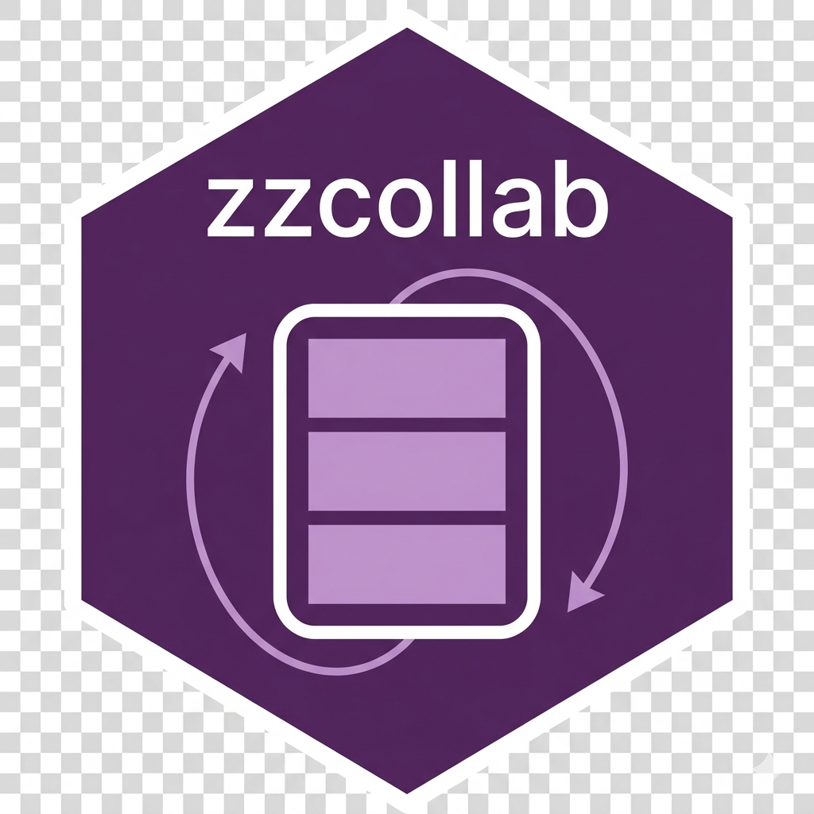

ZZCOLLAB Configuration System
ZZCOLLAB Development Team
2026-10-19
Source:vignettes/configuration.Rmd
configuration.RmdOverview
ZZCOLLAB’s configuration system controls which Docker image a project
builds on, which rendering capabilities (PDF, Quarto) it carries, and a
handful of developer-experience toggles (language server, linting). This
vignette describes what the two-file configuration hierarchy actually
does, verified against the current shell implementation
(modules/config.sh, modules/docker.sh), not
against an aspirational design. Where something documented in earlier
versions of this guide turned out not to exist in the code, it has been
removed rather than carried forward; those removals are called out
explicitly in Section 8.
For a mechanical, line-by-line account of exactly how each setting
reaches the generated Dockerfile — including the one
genuinely non-trivial interaction, between the pdf and
archetype settings — see
docs/dockerfile-variable-reference.md in the package
source. This vignette is the user-facing summary of the decisions that
matter; that document is the reference for the mechanics behind
them.
Key terms in this vignette. New to the vocabulary? These are the terms this guide uses; each is defined again on first use. Full definitions are in
vignette('glossary').
- Profile: the Docker image bundle the environment is built from (
minimal,tidyverse,rstudio,publishing;analysisis a deprecated alias fortidyverseas a profile name — see the warning in Section 4 about the unrelatedanalysisarchetype).- Archetype: the research-compendium shape a project scaffolds (
analysis,manuscript,book,blog,package,simulation). Two archetypes (manuscript,book) default the project to needing a PDF toolchain; see Section 5.- Capability (
true/false/unset) for whether the Dockerfile installs a TeX Live toolchain, independent of archetype.- Two-layer package management: shared, image-baked packages (Layer 1) versus per-user packages added at runtime (Layer 2).
- Base image: the starting Docker image a project builds on (e.g.
rocker/tidyverse,rocker/verse).- Team image: a pre-built Docker image shared via a registry so every collaborator works from a byte-identical environment.
zzc/zzcollab: the framework’s command-line interface;zzcis an alias forzzcollab.
Key Features
-
Two-layer configuration: user config
(
~/.zzcollab/config.yaml) and project config (./zzcollab.yaml), merged with project values winning. There is no system-wide (/etc/zzcollab/...) configuration layer despite a constant of that name existing in the source — see Section 8. -
Docker profile system: four built-in profiles
(
minimal,tidyverse,rstudio,publishing); other base images are reached with--base/--base-image, not through additional named profiles. -
Capability gating:
pdf(TeX Live + Quarto) is resolved per project from explicit config, remembered state, or archetype default — not hardcoded to a profile. - Two-layer package architecture: Docker image (team/shared) + renv (personal/flexible).
-
CLI and R interfaces: most configuration is set via
the
zzc/zzcollabCLI; a narrower R interface wraps the same commands.
Configuration Philosophy
Set defaults once (zzc config set ...), override per
project (zzc config set-local ... or editing
./zzcollab.yaml directly), and let
zzc docker/zzc rebuild regenerate the
Dockerfile from whatever the merged configuration says — a project’s
Dockerfile is not something fixed once at zzc init time; it
is regenerated from current settings every time the docker-generation
path runs.
Configuration Hierarchy
Priority Order (Highest to Lowest)
Verified against load_config() in
modules/config.sh:
-
Project config —
./zzcollab.yaml, loaded last and so winning over user config for any key it sets. -
User config —
~/.zzcollab/config.yaml, loaded first. -
Built-in shell defaults — hardcoded fallbacks in
the relevant module (e.g.
languageserverdefaults totrue,docker_runtimetodocker,ZZCOLLAB_DEFAULT_R_VERSIONto4.6.0).
A handful of CLI flags (--profile,
--base/--base-image, --r-version,
--no-renv) and a handful of specific environment variables
(PPM_SNAPSHOT, ZZCOLLAB_QUARTO_VERSION,
ZZRENVCHECK_TAG) sit above all of this when supplied — they
are read directly by the generation code, not merged through
load_config(). But there is no generic
environment-variable override layer for ordinary config keys:
setting a ZZCOLLAB_TEAM_NAME environment variable, for
instance, has no effect. If you want a setting changed for one
invocation only, pass the CLI flag (if one exists) or edit
./zzcollab.yaml temporarily; there is no third way.
There is also no system-wide configuration file.
lib/constants.sh defines
ZZCOLLAB_CONFIG_SYSTEM="/etc/zzcollab/config.yaml", but
load_config() never reads it — it loads only
$CONFIG_USER and $CONFIG_PROJECT. An
organization wanting shared defaults across many users today has to
distribute a project-config template, not an /etc file. See
Section 8.
Configuration Locations
User Configuration (~/.zzcollab/config.yaml)
Personal defaults across all your projects:
# ~/.zzcollab/config.yaml
defaults:
team_name: "myteam"
github_account: "myusername"
dockerhub_account: "myusername"
profile_name: "tidyverse"
languageserver: trueWhen to use: set your personal preferences once; every new project inherits them unless the project config overrides a key.
Project Configuration (./zzcollab.yaml)
Project-specific overrides, intended to be committed:
# ./zzcollab.yaml (in project root)
defaults:
profile_name: "tidyverse"
archetype: "manuscript"
pdf: "true"When to use: pin a project’s profile, archetype, or
capability settings so zzc docker/zzc rebuild
reproduces the same Dockerfile regardless of who runs it or what their
personal user config says. This is also what
zzc config set-local KEY VALUE writes to.
A real example, generated by
zzc config set-local pdf true on a
tidyverse-profile blog post that needed PDF output without
switching archetype:
CLI Configuration Commands
Essential Configuration Commands
Set Configuration Values
# Set team name
zzc config set team-name "myteam"
# Set GitHub account
zzc config set github-account "myusername"
# Set Docker Hub account
zzc config set dockerhub-account "myusername"
# Set the default Docker profile
zzc config set profile-name "tidyverse"
# Set the default archetype for new projects
zzc config set archetype "manuscript"
# Declare whether this project/user needs a PDF toolchain
zzc config set pdf "true"
# Opt out of the in-container R language server (default: true)
zzc config set languageserver false
# Pre-select 'create remote now' in the init feature wizard (default: false)
zzc config set auto_github trueCLI keys are kebab-case (profile-name,
dockerhub-account) and are normalized to the snake_case
form used internally (profile_name,
dockerhub_account) before being written — either spelling
is accepted on the command line.
zzc config set validates several keys against a fixed
value set and rejects anything else with an error naming the valid
values:
| Key | Valid values |
|---|---|
profile_name / profile
|
minimal, tidyverse, analysis
(deprecated alias for tidyverse), rstudio,
publishing
|
archetype |
manuscript, analysis, book,
package, simulation, blog
|
docker_runtime |
docker, podman,
apptainer
|
validate_strict, validate_fix,
auto_github, languageserver,
remote_allow
|
true, false
|
forge |
github, gitlab, none
|
languageserver (default
true) installs the R language server in the Docker image so
an editor gets in-container LSP completion and diagnostics. zzcollab
assumes no R on the host, so the language server must run in the
container; a host editor (vim, VS Code) bridges its LSP client into the
container. Set languageserver false for REPL-only
workflows.
auto_github (default
false), when true, pre-selects the ‘create remote now’
checkbox in the init feature wizard so the compendium’s GitHub remote is
created during initialization.
pdf (tri-state:
true/false/unset) declares whether the project
needs a PDF rendering toolchain. See Section 5 for how this interacts
with archetype and with the base image’s existing
capabilities — it is the one setting in this system with real
cross-variable logic behind it, and the one most worth understanding
before setting blindly.
A name collides with itself.
analysisis simultaneously a valid value forarchetype(a plain data-analysis compendium, the default archetype) and a deprecated value forprofile_name(an old name for thetidyverseDocker profile, kept only for backward compatibility). Settingarchetype: analysisand settingprofile_name: analysisdo completely different, unrelated things. This is a real naming collision in the current code, not a typo in this document.
Get Configuration Values
zzc config get team-name
# Output: myteam
zzc config get profile-name
# Output: tidyverse (or whatever the merged user+project config says)config get reads the merged (project-overrides-user)
value for a single key; it does not report which file the value came
from.
List All Configuration
# Show the full merged configuration (sections: author, license,
# r_package, style, plus team/profile/archetype/pdf/docker settings)
zzc config list
# Show only the project-local config file's own contents
zzc config list --localThere is no --verbose flag on config list,
and the output does not annotate which file supplied each value — if you
need to know whether a value is coming from user config or project
config, the only way is to inspect ~/.zzcollab/config.yaml
and ./zzcollab.yaml directly, or run
config list --local to see the project file’s own content
in isolation and compare.
Validate Configuration
This checks that ~/.zzcollab/config.yaml and
./zzcollab.yaml (if present) each parse as valid YAML via
yq eval '.'. It does not check cross-key
consistency, does not check that a referenced profile exists, and
produces plain Valid YAML: <path> /
Malformed YAML: <path> lines rather than a checklist
— there is no --verbose mode and no “configuration
hierarchy is consistent” check.
Configuration Workflow Examples
Team Lead Setup
zzc config set team-name "genomicslab"
zzc config set github-account "genomicslab"
zzc config set profile-name "tidyverse"
mkdir cancer-study && cd cancer-study
zzc tidyverse
zzc github # create private GitHub repo
# Pin the profile for the project explicitly, independent of whatever
# collaborators have set in their own user config
zzc config set-local profile-name "tidyverse"
make docker-build
make docker-push-team
git add . && git commit -m "Initial team setup" && git pushTeam Member Setup
zzc config set team-name "genomicslab"
git clone https://github.com/genomicslab/cancer-study.git
cd cancer-study
make docker-build # builds from the committed Dockerfile
# ./zzcollab.yaml (committed) supplies the project's profile/archetype/
# pdf settings; only account identity needs to come from user configCLI Flags Reference
Project Initialization
mkdir study1 && cd study1
zzc tidyverse # full setup: init + renv + docker, tidyverse profile
zzc github # create private GitHub repoDocker Profile Selection
zzc minimal # ~650MB, essential dev tools, rocker/r-ver
zzc tidyverse # ~1.2GB, tidyverse ecosystem, rocker/tidyverse
zzc rstudio # ~980MB, RStudio Server, rocker/rstudio
zzc publishing # ~4.2GB, manuscript rendering, rocker/verse
# For Shiny, Bioconductor, geospatial, or other domains: build on a
# custom base image and add packages via renv
zzc docker --base rocker/shiny
zzc list profiles # list profiles with base images and sizes
zzc list libs # list system library bundles
zzc list pkgs # list R package bundlesCustom Docker Composition
zzc docker --base rocker/r-ver:latest
zzc docker --base rocker/rstudio:4.3.0
zzc docker --base bioconductor/bioconductor_docker:latest--base accepts any syntactically valid Docker image
reference (validate_base_image() checks the string format
only; it does not check the image against a known list). Additional R
packages are installed inside the container and captured in
renv.lock — the package set lives there, not in a CLI flag.
System library dependencies needed by those packages are derived
automatically from code + DESCRIPTION +
renv.lock, filtered against what the chosen base already
ships.
Switching Profile on an Existing Project
This is the command used to move a project from, say,
tidyverse to minimal without recreating it —
exactly the kind of change this vignette’s companion reference document
(dockerfile-variable- reference.md) walks through the
consequences of, including the package-list reproducibility gap that a
profile switch can expose: a project whose code relies on packages the
old base image happened to ship, but which are declared nowhere
in renv.lock/DESCRIPTION, will fail to find
them after switching to a leaner base. Check what your code actually
library()s against what renv.lock actually
pins before switching down to a smaller profile.
Docker Profile System
Understanding Docker Profiles
A profile resolves to exactly one thing in the generator: a base
Docker image (get_profile_base_image() against
templates/bundles.yaml). Nothing else about a profile — its
advertised package bundle, its advertised system-library bundle — is
read by the Dockerfile generator. Those bundle definitions exist in
bundles.yaml for documentation and for
zzc list libs/zzc list pkgs, but
generate_dockerfile_inline() does not consult them; actual
R-package installation always comes from renv::restore()
against renv.lock (or, in --no-renv mode, from
DESCRIPTION), never from a profile’s declared package
list.
Concretely, this means minimal’s advertised package
bundle (renv, devtools, usethis,
tinytest, roxygen2, here) is
not actually installed by choosing the
minimal profile — the only effect of minimal
is the base image, rocker/r-ver. If your project’s code
depends on packages the old base happened to provide, switching profile
does not compensate by installing the new profile’s advertised bundle;
it only changes the starting image.
Available Profiles
minimal (~650MB)
Base image: rocker/r-ver:latest. No tidyverse, no
pandoc, no Quarto, no TeX Live baked in. Use for lightweight
development, CI/CD, or any project that declares every dependency it
needs in renv.lock/ DESCRIPTION rather than
relying on anything the base image happens to ship.
tidyverse (~1.2GB) — the framework default
Base image: rocker/tidyverse:latest. Formerly named
analysis as a profile; analysis is still
accepted as a deprecated profile alias. Chosen as the framework’s
default base image specifically because it is the only “full” rocker
base (tidyverse/verse/rstudio/shiny) that also publishes an arm64 image
— rocker/verse does not, and running it under QEMU
emulation breaks pandoc outright.
rstudio (~980MB)
Base image: rocker/rstudio:latest. RStudio Server at
http://localhost:8787 via
make docker-rstudio.
publishing (~4.2GB)
Base image: rocker/verse:latest, which ships TeX Live
and Quarto already baked in by rocker upstream
(install_texlive.sh is run when rocker builds
verse from tidyverse). Choosing this profile
does not by itself set archetype or pdf —
those are separate settings (see Section 5) that control whether the
generator also installs anything on top of what
rocker/verse already provides. In practice, because
rocker/verse already has TeX Live, the TeX-install block in
the generator is skipped on this profile regardless of
pdf’s value; the only thing
pdf/archetype still control on
publishing is the LaTeX-package warm-up block (pre-baking
the specific package closure your render needs, as root, at build
time).
Profile Selection Guide
| Research Domain | Recommended Profile | Alternative |
|---|---|---|
| General data analysis | tidyverse |
minimal |
| Lightweight / CI | minimal |
— |
| Interactive apps / RStudio IDE | rstudio |
tidyverse |
| Manuscript / PDF rendering | publishing |
tidyverse + pdf: true
|
| Domain-specific (genomics, GIS, Shiny) |
tidyverse or minimal + custom
--base
|
— |
The publishing vs. tidyverse +
pdf: true choice is a real trade-off, not a stylistic one:
publishing (4.2GB) ships the full rocker/verse
TeX Live tree pre-installed; tidyverse +
pdf: true (measured around 3.9GB for a project also running
renv::restore()) installs only TeX Live on top of
tidyverse, arrives at a somewhat smaller image, and —
unlike publishing — has a native arm64 build. On Apple
Silicon hardware, tidyverse + pdf: true is
usually the better choice unless you specifically need something else
rocker/verse provides.
Capability Settings: pdf and
archetype
This section is a summary;
docs/dockerfile-variable-reference.md Section 3 has the
full mechanical walkthrough, including the precedence rules and the one
asymmetry worth knowing about before you rely on it.
What archetype Controls
archetype (set via zzc init --archetype A,
or persisted with zzc config set archetype A) primarily
controls what zzc init scaffolds — which template files,
which symlinks, which entry point a render targets. Six values exist:
manuscript, book, blog,
analysis (the default), package,
simulation.
Only two of those six values feed into Dockerfile generation at all:
manuscript and book default the project to
needing a PDF toolchain; blog and book default
it to needing Quarto. The other three (analysis,
package, simulation) produce a Dockerfile
identical to leaving archetype unset.
What pdf Controls
pdf is a direct, explicit override that always wins over
the archetype-derived default:
-
pdf: trueforces the TeX Live install block on (if the base image doesn’t already have TeX Live) and always also forces Quarto on. -
pdf: falseforces the TeX Live block off — even on amanuscriptorbookarchetype. - Left unset, the archetype default from the table above applies.
There is no equivalent explicit setting for Quarto
alone. The only ways to get Quarto installed are: set
archetype to blog or book, or set
pdf: true (which drags Quarto in as a side effect, with no
way to decline it). A project wanting Quarto-only rendering, no PDF/TeX,
outside the blog/book archetypes has no config
key for that today.
Worked Decision
Ask these two questions, in order:
-
Does the project render to PDF at all? If no, leave
pdfunset and pickarchetype: analysis(orpackage/simulationas fits) — you get neither TeX nor Quarto installed, the smallest image. -
If yes: does the base image already have TeX Live?
Check with
zzc list profiles— onlypublishing(rocker/verse) does. If you’re on any other profile, setpdf: trueexplicitly rather than relying on archetype alone, both so the setting survives a profile switch and so.zzcollab-stateremembers it correctly across regeneration (zzc dockerwithout--profilereuses the base image recorded in.zzcollab-state, andpdf’s remembered value in that same file is what keeps a barezzc dockerfrom silently dropping TeX from a manuscript project that never setCONFIG_PDFdirectly).
Two-Layer Package Management Architecture
Layer 1: Docker Profile (Team/Shared)
What: the base image’s own packages (and, for
pdf/archetype-gated projects, TeX Live/Quarto).
Control: --profile/--base at
generation time. Shared: every build from the same
Dockerfile gets the same image. Purpose: fast container
startup, team consistency.
Layer 2: Dynamic renv (Personal/Flexible)
What: packages installed inside the container with
install.packages(), snapshotted to renv.lock
automatically on exit via .Last() in
.Rprofile. Control: whoever is working in
the container, at any time. Purpose: analysis-specific
packages, without rebuilding the image.
Key Principle: renv.lock is the Source of Truth for
Packages
The Docker image provides the starting foundation and build-time
performance; renv.lock is what actually pins exact package
versions. A collaborator can, in principle, restore from
renv.lock on top of a different compatible base image and
get the same packages at the same versions — but see the caveat in
“Docker Profile System” above: this only holds for packages that are
genuinely recorded in renv.lock. Code that
library()s a package the old base happened to
ship, but that was never added to
renv.lock/DESCRIPTION, is not actually
reproducible across a profile switch, no matter how the renv layer is
described in principle.
Practical Configuration Scenarios
Scenario 2: Team Lead Standardizing a Lab
zzc config set team-name "psychlab"
zzc config set github-account "psychlab"
mkdir attention-study && cd attention-study
zzc tidyverse
zzc github
# Pin the project's profile and archetype explicitly so it survives
# regardless of what any individual team member's user config says
zzc config set-local profile-name "tidyverse"
zzc config set-local archetype "manuscript"
zzc config set-local pdf "true"
make docker-build
make docker-push-team
git add . && git commit -m "Team setup" && git pushTeam members then only need:
Scenario 3: Right-Sizing an Existing Project
A project on tidyverse + pdf: true wants to
check whether a smaller base would work:
# Check what the code actually needs vs. what renv.lock actually pins
grep -rn "library(" analysis/ R/
grep -o '"[A-Za-z0-9.]*": {' renv.lock
# If everything the code uses is genuinely in renv.lock/DESCRIPTION:
zzc docker --profile minimal
zzc rebuild --verbose
# If the code relies on tidyverse packages absent from renv.lock, add
# them to renv.lock first (renv::snapshot() inside the container with
# those libraries loaded), or stay on the tidyverse profile.See docs/dockerfile-variable-reference.md for exactly
which variables this regeneration reads and in what order.
Configuration Validation and Troubleshooting
Common Issues
Issue 1: A setting isn’t taking effect
Project config always wins over user config for any key it sets. If
zzc config get profile-name returns something other than
what you set with zzc config set, check
./zzcollab.yaml for an override:
There is no built-in command that annotates which file supplied a merged value — comparing the two files directly is the only way.
Issue 2: ARM64 Mac Cannot Build an AMD64-Only Base Image
Error: rocker/geospatial:latest: no matching manifest for linux/arm64/v8Preferred fix: use an arm64-compatible base
(tidyverse, rstudio, r-ver all
publish arm64 images; rocker/verse does not) and add the
domain packages via renv instead of switching base image.
Fallback: force amd64 under emulation (slower, but compatible):
Issue 3: Missing User Configuration File
Error: Configuration file not found: ~/.zzcollab/config.yamlIssue 5: TeX Live Build Failure on a Minimal Base
If zzc docker --profile minimal (or any profile lacking
TeX Live) with pdf: true fails during the TeX Live install
step with something like
Package 'perl' has no installation candidate or
Unable to locate package xzdec: this was a real bug in the
generator (the apt package lists get cleared by the pandoc/Quarto steps
that run immediately before the TeX Live block, and the bootstrap’s
apt-get update was conditional on a check that missed that
state). It is fixed as of the apt-get update being
unconditional in that block; if you hit this on an older checkout,
update the framework.
R Interface Configuration
The R interface wraps the same shell commands documented above; it
does not add configuration capability the CLI lacks, and in one place
(init_project()’s profile argument) it is
currently narrower than the CLI:
init_project() validates profile against only
c("minimal", "analysis", "rstudio") — it does not currently
accept "tidyverse" or "publishing" even though
the shell CLI and bundles.yaml both support them. Use the
shell CLI (zzc tidyverse, zzc publishing)
directly if you need those profiles; init_project() will
reject them.
library(zzcollab)
init_config() # create ~/.zzcollab/config.yaml
set_config("team_name", "myteam")
set_config("profile_name", "tidyverse")
set_config("github_account", "myusername")
team <- get_config("team_name")
all_config <- list_config()
print(all_config)
valid <- validate_config()
# init_project()'s profile argument accepts only "minimal", "analysis",
# or "rstudio" (narrower than the CLI; see note above)
init_project(
team_name = "genomicslab",
project_name = "cancer-study",
profile = "analysis"
)get_config_default(key, default) is the internal
null-coalescing helper other package functions use; it is documented
(?get_config_default) but is not typically called directly
by users.
There are no get_effective_config(),
get_config_sources(), or get_config_defaults()
functions in the current R interface — an earlier version of this
vignette described them; they do not exist in R/config.R.
Source inspection (config list for the merged result, or
the two YAML files directly for provenance) is the only way to answer
“where did this value come from” today.
Best Practices
Configuration Strategy by Use Case
Solo Researcher
- User configuration only.
- Add packages via renv as needed; commit
renv.lock, not user config.
Security Considerations
- Never commit API keys, passwords, or credentials to
zzcollab.yamlorrenv.lock. - Use
~/.Renviron(outside Git) for secrets. -
zzc githubdefaults to creating private repositories; confirm the visibility setting if that matters for your project.
Performance
-
minimalandtidyversebuild fastest;publishingis the largest and slowest cold build (4.2GB, full TeX Live baked in by rocker). - A profile switch on an existing project
(
zzc docker --profile X) only changes the base image and regenerates the Dockerfile; it does not retroactively add the switched-to profile’s advertised packages — see the Layer 1 caveat above. -
make check-renv(strict + auto-fix) andmake snapshot(growrenv.lock/DESCRIPTIONfrom the running image) are the two make targets to run before committing a package change.
Summary
Key Concepts
- Configuration hierarchy: project config overrides user config; there is no environment-variable layer for ordinary keys and no system-wide config file, despite documentation (and a dead constant in the source) once suggesting otherwise.
-
Docker profiles: four built-in profiles resolving
to a base image only (
minimal,tidyverse,rstudio,publishing); a profile’s advertised package/library bundle is not installed by choosing it. -
Capability settings:
pdf(explicit, tri-state, always wins) andarchetype(supplies the default whenpdfis unset) jointly gate the TeX Live and Quarto install blocks — seedocs/dockerfile-variable-reference.mdfor the full logic. -
Two-layer package architecture: Docker image
(shared) + renv (flexible), with
renv.lockas the actual reproducibility source of truth — conditional on dependencies actually being declared there. -
R interface: thinner than the CLI in at least one
place (
init_project()’s profile set); prefer the CLI when in doubt.
Quick Reference
# Initialize
zzc config init
zzc config set team-name "myteam"
zzc config set profile-name "tidyverse"
# Create a project
mkdir study && cd study
zzc tidyverse
zzc github
# Switch profile on an existing project
zzc docker --profile minimal
zzc rebuild --verbose
# Team collaboration
make docker-build && make docker-push-team # lead
git clone ... && cd study && make docker-build # member
# Package management (inside container)
install.packages("package")
q() # auto-snapshot on exit
# Before committing a dependency change
make snapshot
make check-renvFurther Reading
-
zzc --help/zzc docker help/zzc config help— CLI reference, verified current as of this vignette’s last edit. -
help(package = "zzcollab")— R package documentation. -
vignette("getting-started")— tutorial. -
vignette("glossary")— term definitions. -
docs/dockerfile-variable-reference.md— full variable-by-variable mechanics of Dockerfile generation, including thepdf/archetypeinteraction summarized in Section 5 above.
Changelog Note for Maintainers
This vignette was rewritten against the current shell implementation on 2026-10-19. Content removed from the prior version because it described behavior not present in the code:
- A system-wide
/etc/zzcollab/config.yamlconfiguration layer (ZZCOLLAB_CONFIG_SYSTEMis defined inlib/constants.shbut never read byload_config()). - A generic environment-variable configuration-override layer
(
ZZCOLLAB_TEAM_NAMEand similar were never implemented). -
config list --verboseand per-key source annotation inconfig list/config validateoutput. - Custom profile composition via a
profiles:block in user config (base-image/libs-bundle/pkgs-bundlekeys) — no code reads such a block. - The R functions
get_effective_config(),get_config_sources(),get_config_defaults()(plural) — none exist inR/config.R. - The claim that the
publishingprofile is “capability-adaptive,” rendering PDF when a LaTeX toolchain is present and falling back to HTML otherwise by itself — no such fallback logic was found inmodules/docker.sh; what exists is thepdf/archetypegating described in Section 5, which is an install-time decision, not a render-time fallback.
If any of the above is reintroduced in the codebase, this vignette should be updated to describe it again — these are accurate removals for this date’s source, not permanent judgments about the design.